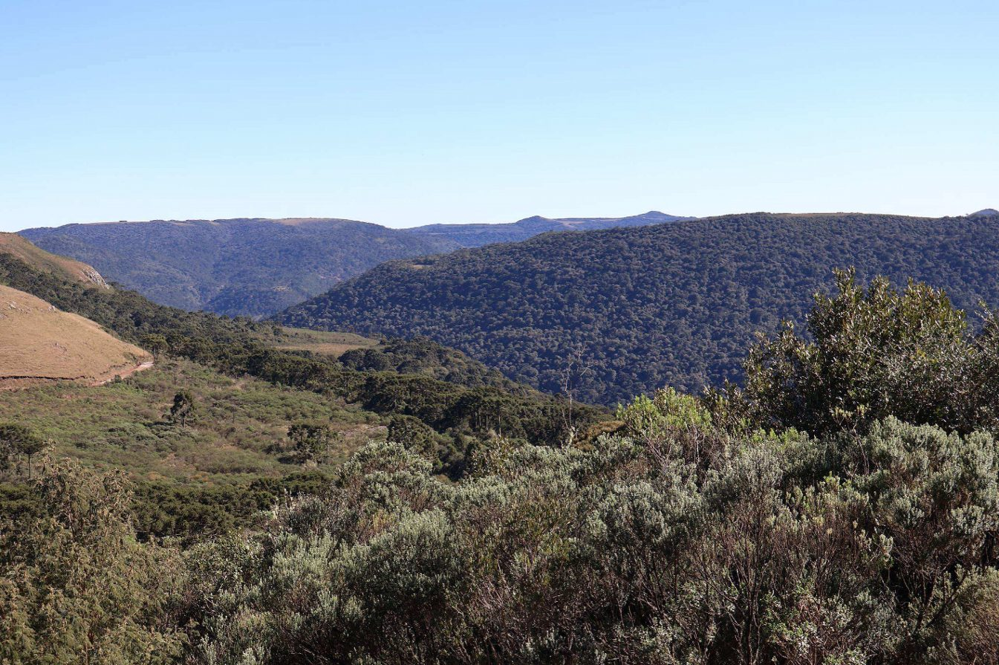
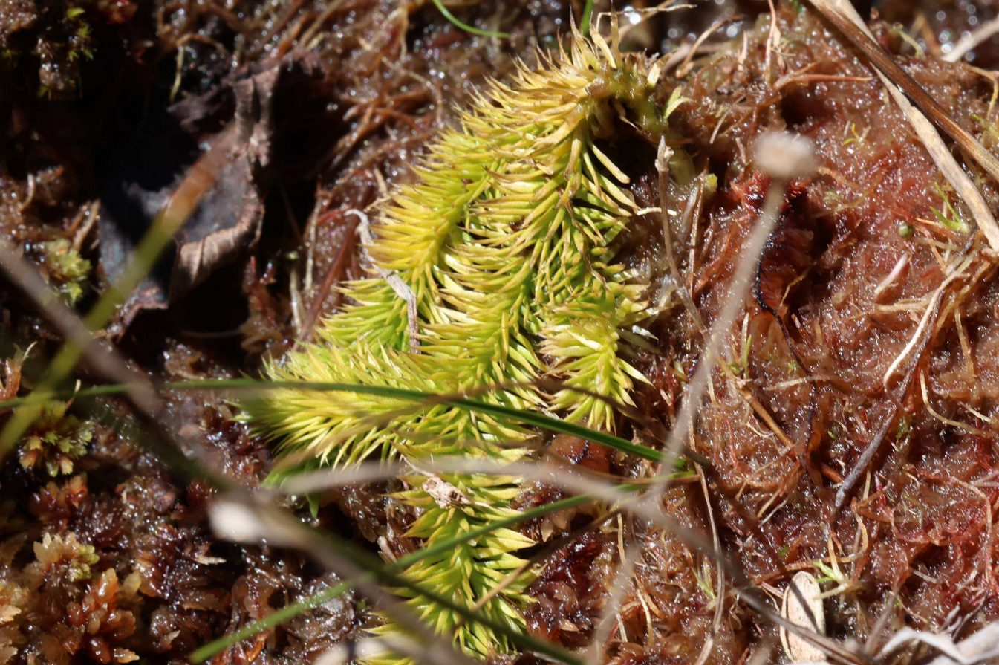
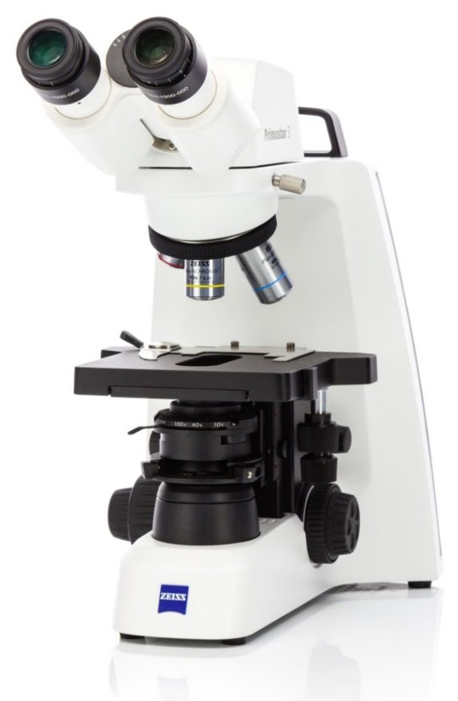
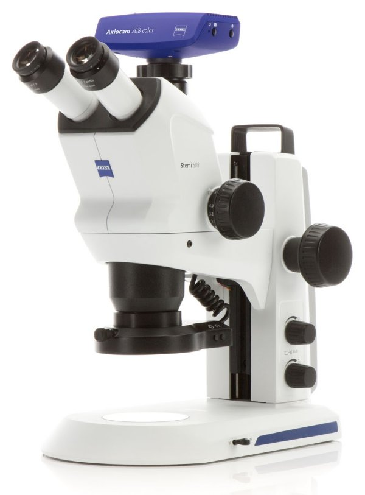

Diversificação das Gleicheniaceae nas montanhas tropicais
Artigo no Journal of Biogeography mostra os sistemas montanhosos tropicais como berços de diversificação das samambaias da família.
Ler o artigo →Botânica, coleções e florestas de Santa Catarina
Na Universidade Regional de Blumenau, um mesmo espaço reúne duas coisas: a coleção botânica do Herbário Dr. Roberto Miguel Klein e o grupo de pesquisa coordenado pelo Prof. André Luís de Gasper, que estuda licófitas, samambaias e as florestas de Santa Catarina.
English versionArtigo no Journal of Biogeography mostra os sistemas montanhosos tropicais como berços de diversificação das samambaias da família.
Ler o artigo →Samambaia endêmica da Serranía de los Yariguíes, na Colômbia, descrita na Phytotaxa.
Ler o artigo →Artigo em Perspectives in Ecology and Conservation defende uma rede de colaboração para entender o potencial de adaptação do hotspot.
Ler o artigo →O grupo integra o novo projeto financiado pela FAPESP, que vai sintetizar dados de biodiversidade e estoques de carbono da vegetação brasileira.
O Prof. André Luís de Gasper foi eleito presidente da SBB para a gestão 2027–2030.
Artigo apresenta a abordagem do inventário para monitorar a biodiversidade em florestas hiperdiversas.
Ler o artigo →Coordenado pelo Prof. André Luís de Gasper, com estudantes da iniciação científica ao pós-doutorado.
A Floresta Atlântica é um dos hotspots globais de biodiversidade: muito diversa, rica em espécies endêmicas e reduzida a fragmentos. Isso faz dela um laboratório natural para perguntas que valem para as florestas tropicais do mundo todo.

Como surgem e como se delimitam as espécies de samambaias, e o que a história evolutiva delas revela sobre a diversificação das plantas nos trópicos?
Taxonomia integrativa, filogenia, biogeografia e evolução cromossômica, com dados moleculares, morfometria, esporos, citometria de fluxo e cariologia.
Artigos-chave
Como as florestas respondem ao clima e às pressões humanas, e o que isso significa para a biodiversidade e o carbono das florestas tropicais?
Estrutura, dinâmica, mortalidade e atributos funcionais das árvores, distribuição de espécies e mudanças climáticas, com os dados de longo prazo do FlorestaSC.
Artigos-chaveComo transformar coleções científicas em dados abertos e confiáveis para a pesquisa e a conservação?
Curadoria, digitalização, diagnóstico e políticas para as coleções biológicas brasileiras, a partir da experiência do Herbário FURB.
Artigos-chavePteridophyte Phylogeny Group (PPG) · Missouri Botanical Garden · Universidade de Cambridge · Global Forest Biodiversity Initiative (GFBI) · sPlot · Flora e Funga do Brasil · parceiros na Colômbia e em toda a América Latina
Projetos coordenados pelo grupo ou com participação da equipe.
Morfometria do complexo Parablechnum cordatum e evolução do número cromossômico em Blechnaceae.
2024–atual · CNPq, Bolsa de ProdutividadeRevisão das espécies sul-americanas, primeiro plastoma completo de Gleichenella e biogeografia global da família.
2025–atual · FAPESCContinuidade do FlorestaSC para subsidiar a gestão pública do território catarinense e a conservação dos recursos naturais.
2022–atual · Governo do Estado de SCCentral de laboratórios multiusuários para caracterização e monitoramento de impactos antropogênicos à biodiversidade.
2025–atual · FINEPInfraestrutura física do Herbário FURB, da Coleção de Glomeromycota (CICG) e da Coleção Zoológica.
2025–atual · FINEPModelagem de distribuição, cultivo in vitro e criopreservação de esporos e gametófitos para conservação ex situ.
2025–atual · FAPESCImpactos climáticos sobre samambaias em Santa Catarina e nos Andes colombianos, com educação ambiental para jovens.
2025–atual · FAPESCPlataforma de identificação botânica por espectroscopia no infravermelho próximo (NIR).
2025–atual · FAPESCSíntese de dados de biodiversidade e estoques de carbono da vegetação brasileira em uma plataforma on-line.
2026–atual · FAPESP
Professor da FURB, coordenador do grupo e curador do Herbário desde 2012. Bolsista de produtividade do CNPq, trabalha com taxonomia, sistemática e biogeografia de samambaias e coordena o Inventário Florístico Florestal de Santa Catarina. Coordenou a Rede Brasileira de Herbários (2014–2023) e é coautor da classificação PPG I de licófitas e samambaias.
Pós-graduandos e pós-doutorandos que se formaram no grupo. Alguns continuam conosco em outra etapa da carreira.
Destaques recentes do grupo. A lista completa está no Lattes e no Google Scholar.
Todos os artigos, capítulos e livros, sempre atualizados, nos perfis do grupo.
Ciência aberta: dados e scripts dos nossos estudos ficam públicos no GitHub do grupo.
Recebemos estudantes e pesquisadores do Brasil e do exterior interessados em samambaias, florestas tropicais e coleções biológicas.

Estudantes de graduação da FURB podem participar dos projetos com bolsas de iniciação científica (CNPq, FAPESC e programas da FURB) ou como voluntários.
Orientação nos programas de pós-graduação da FURB em Biodiversidade (PPGBio), Ciências Ambientais (PPGCA) e Engenharia Florestal, com bolsas conforme os editais (CAPES, CNPq, FAPESC).
Propostas alinhadas às linhas do grupo, submetidas em conjunto a editais de bolsa de pós-doutorado.
Pesquisadores e estudantes de outras instituições, inclusive do exterior, podem desenvolver projetos no Herbário e usar os equipamentos do Laboratório Multiusuário.
Escreva para o Prof. André com um breve currículo (Lattes ou CV), algumas linhas sobre o que você gostaria de pesquisar e o programa ou a bolsa que pretende buscar.
A coleção botânica da FURB, aberta à consulta, à permuta e à visitação.
Criado em 1990, o Herbário leva o nome do botânico e ecólogo Roberto Miguel Klein, professor da FURB e grande estudioso da flora catarinense.
Abriga coleções e estimula estudos sobre a diversidade da flora. O acervo é climatizado e conta com biblioteca especializada. O mesmo espaço abriga o Laboratório Multiusuário, aberto a pesquisadores de outros grupos e instituições. É regido pela Resolução FURB nº 68/2014.

Para pesquisadores, estudantes, escolas e instituições.
Espécies e locais de coleta na base on-line, também nas redes speciesLink e SiBBr.
Abrir a base de dados →Intercâmbio de exsicatas com herbários e instituições do país, mediante solicitação à curadoria.
Falar com a curadoria →Folhas preservadas em sílica-gel e ligadas ao espécime de origem, disponíveis para extração e permuta. A planilha de amostras é atualizada constantemente.
Ver planilha do Banco de DNA →

Reserva dos equipamentos do laboratório. Depois de preencher, avise os responsáveis.
Reservar equipamento →Os registros do Herbário FURB e do FlorestaSC são abertos e podem ser consultados nestas plataformas.

Consultas ao acervo, permutas, empréstimos, Banco de DNA e visitas.
Orientação, estágios e parcerias de pesquisa com o Prof. André Luís de Gasper.